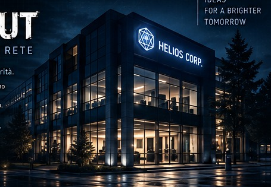
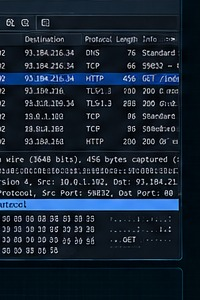
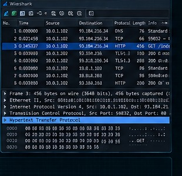
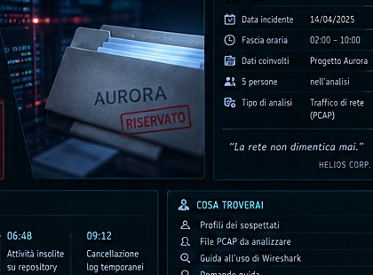
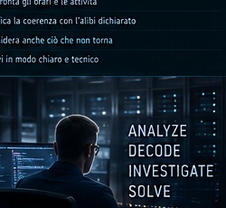

Un incidente. Cinque postazioni. Una traccia di rete da ricostruire. Entrate come squadra nella rete di Helios Corp e iniziate l'indagine.
01 · INVESTIGATECostruisci, osserva, prova.
02 · TRACESegui le comunicazioni.
03 · REPORTFormula il verdetto.
HELIOS ACCESS TERMINAL
Accesso della squadra
Identificatevi per entrare nei laboratori.
Massimo 8 componenti.
HELIOS CORP · SECURITY INCIDENT REPORT
Il caso HX-047 Progetto Aurora.
Una fuga di dati. Cinque persone. Una sola storia compatibile con le tracce.
CLASSIFICAZIONE · RISERVATO
Qualcuno ha portato Aurora fuori dalla rete.
Nella notte del 14 aprile, il sistema di sicurezza di Helios Corp. ha rilevato un comportamento anomalo. Un documento riservato del progetto Aurora, normalmente conservato sul server aziendale, è comparso su un'infrastruttura esterna.
Non avete una confessione e non avete una telecamera che mostra il colpevole. Avete qualcosa di più interessante: il traffico di rete generato dalle cinque postazioni sotto indagine.
05POSTAZIONI SOTTO ANALISI
05FILE PCAP DISPONIBILI
01DOCUMENTO RISERVATO
01RESPONSABILE DA IDENTIFICARE
20:45Ufficio quasi vuotoTerminano le normali attività della giornata.
21:00Inizia la finestraLe cinque postazioni vengono monitorate.
21–22Traffico anomaloLe catture registrano comunicazioni differenti.
22:15AllarmeIl documento Aurora viene individuato fuori dalla rete.
22:30BLACKOUTIl CISO blocca gli accessi e apre l'indagine.
OBIETTIVO DELL'INDAGINE
Individuare quale postazione presenta la sequenza più significativa.
Ricostruire cosa è successo, in ordine temporale.
Indicare server, indirizzi IP, protocolli e metodi utilizzati.
Distinguere una semplice connessione da una prova realmente significativa.
Scrivere un verdetto che possa essere verificato da un altro analista.
LE QUATTRO DOMANDE
CHI?
Quale postazione produce la traccia decisiva?
CON CHI?
Quale server o servizio viene contattato?
CHE COSA?
Viene richiesto, scaricato o inviato qualcosa?
COME?
Il traffico è leggibile oppure cifrato?

HELIOS CORP. · Sede centrale. Il progetto Aurora viene gestito nella rete interna dell'azienda.
REGOLE DELL'INDAGINE
Lavorate in squadra.
Non modificate i file PCAP.
Non fidatevi di un singolo indizio.
Alibi e moventi sono contesto, non prove tecniche.
Ogni conclusione deve poter essere spiegata.
“Non è importante cosa pensi. È importante cosa puoi dimostrare.”HELIOS CORP. SECURITY DIVISION
HELIOS CORP · TRAINING LAB · BLACKOUT
Laboratori BLACKOUT
Tre prove di scoperta. Non leggere la soluzione: costruiscila, testala e correggila.
REGOLE DEL LABORATORIO
Situazione → tentativo → errore → scoperta
Qui non devi completare definizioni. Devi risolvere problemi. Il docente formalizzerà i nomi tecnici solo dopo che avrai trovato una soluzione.
LAB 010 / 20IN CORSO
LAB 020 / 20IN CORSO
LAB 030 / 20IN CORSO
ACCESSO AL RAPPORTO FINALE
TRE LABORATORI COMPLETATI
Avete completato tutte le prove. Il seguente codice deve essere inserito nella pagina VERDETTO.
••••••••
MISSIONE 01
Helios ha tre computer che devono poter comunicare. Hai a disposizione alcuni elementi.
I nomi sono visibili, ma nessuno ti spiega che cosa fanno.
Costruisci una soluzione e prova a far viaggiare un messaggio.
TAVOLO DI LAVORO
Trascina i nodi. Per collegare due elementi, seleziona prima uno e poi l'altro. CLIENT e SERVER possono avere un solo collegamento diretto; SWITCH e ROUTER possono averne più di uno. Per correggere un errore, clicca sul collegamento e poi su “ELIMINA COLLEGAMENTO” oppure premi CANC.
→
Costruisci una prima soluzione.
CHIUDI LABORATORIO 01
Quando hai superato tutte le quattro missioni, registra ufficialmente il risultato.
In attesa delle quattro missioni.
MISSIONE 01Tre computerAlmeno tre CLIENT devono poter comunicare.
MISSIONE 02Molti dispositiviCollega quattro computer senza dover creare un collegamento diretto tra ogni coppia.
MISSIONE 03Una risorsa condivisaUna macchina deve mettere a disposizione una risorsa che gli altri possano raggiungere.
MISSIONE 04Due mondi separatiDue gruppi di computer appartengono a reti diverse: trova un modo perché possano comunicare.
MISSIONE 02
Il messaggio è soltanto “CIAO”. Marta deve farlo arrivare a Luca.
Nella rete ci sono più macchine. Non esistono campi da compilare.
Devi decidere tu se il contenuto ha bisogno di qualcosa in più.
OFFICINA DEL MESSAGGIO
CIAO CONTENUTO
Trascina qui ciò che ritieni utile.
ARCHIVIO — INFORMAZIONI NON CLASSIFICATE
Prepara la tua prima ipotesi.
NUOVO INCIDENTE — DUE COMUNICAZIONI IDENTICHE
Ora Marta invia contemporaneamente due “CIAO” a Luca. Stesso mittente, stesso destinatario, stesso contenuto. Eppure sono due comunicazioni diverse.
Trova nell'archivio due informazioni che possano permettere di distinguerle.
CIAO · A
CIAO · B
Risolvi prima il problema precedente.
ULTIMO INCIDENTE — IL MESSAGGIO SI SPEZZA
Un messaggio molto grande viene diviso in parti. Una parte manca, una arriva due volte e le altre arrivano fuori ordine.
Che cosa dovrebbe accompagnare ogni parte per permettere al destinatario di ricostruire il messaggio?
Trascina qui la tua ipotesi.
Nessuna prova effettuata.
CHIUDI LABORATORIO 02
Completa i tre incidenti. La riflessione è utile, ma la registrazione avviene quando le tre prove sono superate.
In attesa delle tre prove.
STOP — ORA TOCCA AL DOCENTE
Scrivi con parole tue che cosa hai capito. I termini tecnici verranno introdotti dopo la scoperta.
MISSIONE 03 · HELIOS SERVICE DESK
Quattro problemi reali della rete. In questa prova non conosci ancora i nomi tecnici delle soluzioni.
Il tuo compito è capire che cosa deve succedere perché ogni situazione possa funzionare.
Scegli un comportamento, prova la simulazione, osserva la traccia e modifica la tua ipotesi.
CHIUDI LABORATORIO 03
Individua correttamente tutte le quattro soluzioni e registra il risultato.
0 / 4 situazioni risolte.
FASE LABORATORI
Completa e registra tutti e tre i laboratori. Il codice del verdetto comparirà qui.
FASCICOLI PERSONALI · CLASSIFICATO
SOSPETTATI
Cinque persone, cinque storie, una sola verità. Analizza i profili, apri i fascicoli e scarica le catture di rete. Non fidarti delle apparenze.
CASE ID: HX-047
PROGETTO AURORA
“In una rete, ogni azione lascia una traccia.”HELIOS CORP. SECURITY DIVISION
FIELD MANUAL · HELIOS CORP SECURITY DIVISION
Analisi del traffico con Wireshark
Trasforma i pacchetti in una storia. Non devi capire tutto il traffico: devi imparare a riconoscere ciò che è rilevante.
STRUMENTO DELL'INVESTIGATORE
INTRODUZIONE A WIRESHARK
Wireshark è un analizzatore di protocolli di rete. Durante BLACKOUT sarà il vostro strumento per osservare le comunicazioni generate dalle cinque postazioni. Una cattura non vi dirà direttamente “chi è il colpevole”: vi permette di raccogliere elementi osservabili e collegarli in una sequenza.
IPCHI COMUNICA
PORTAQUALE SERVIZIO
PROTOCOME COMUNICA
TIMEQUANDO ACCADE
02 · EVIDENCE FILE
COS'È UN PCAP?
Un PCAP è una registrazione di pacchetti catturati su una rete. Pensalo come una registrazione forense: contiene tante informazioni, alcune importanti e molte irrilevanti per il caso.
Il vostro compito non è leggere ogni riga. È ridurre il rumore, trovare una comunicazione interessante e capire cosa succede prima e dopo.
⚠ Regola dell'analista: non partire dalla risposta. Parti da un fatto osservabile e costruisci l'ipotesi solo dopo.

FIELD VIEW · una cattura può contenere centinaia di pacchetti. Filtri e tempo servono a trovare il segnale nel rumore.
03 · PACKET ANATOMY
LEGGERE UN PACCHETTO
Quando selezioni una riga, osserva prima questi quattro elementi. Sono sufficienti per iniziare a formulare domande.
SORGENTEL'indirizzo IP della macchina che invia il traffico.
DESTINAZIONEL'IP della macchina o del servizio che riceve.
PROTOCOLLOHTTP, DNS, TLS, TCP... indica il tipo di comunicazione.
INFOUna sintesi della richiesta: GET, POST, risposta, query DNS e altro.

LAB VIEW · osservare il traffico significa imparare a fare domande precise.
DOMANDE UTILI
Chi sta parlando?
Con quale macchina?
Quale protocollo sta usando?
Sta chiedendo qualcosa o sta inviando qualcosa?
È una comunicazione interna o verso l'esterno?
04 · FILTER LAB
FILTRI: IL TUO LENTE DI INGRANDIMENTO
httpMostra il traffico HTTP. Utile quando vuoi cercare comunicazioni applicative leggibili.
dnsMostra le richieste DNS: quale nome di dominio sta cercando la macchina?
tlsMostra le comunicazioni TLS/HTTPS. Il contenuto applicativo può essere cifrato.
http.request.method == "GET"Cerca richieste con cui il client ottiene una risorsa.
http.request.method == "POST"Cerca richieste con cui il client invia dati.
ip.addr == 10.0.1.50Concentra l'analisi sulle comunicazioni con il server aziendale.
ip.dst == 203.0.113.42Cerca traffico diretto verso il server esterno da verificare.
frame contains "aurora"Cerca la parola Aurora nei dati visibili dei frame.
05 · APPLICATION LAYER
HTTP, HTTPS E TLS
GET“Dammi questa risorsa.”
→
SERVERRiceve la richiesta.
→
200 OKRichiesta completata.
HTTP usa normalmente la porta 80. HTTPS usa TLS e normalmente la porta 443: il contenuto applicativo è cifrato. Anche quando non puoi leggere il contenuto, IP, porte, tempi e dimensioni del traffico possono restare osservabili.
💡 Domanda investigativa: se trovi una connessione esterna, chiediti sempre che cosa è successo prima? Una richiesta DNS? Un download? Un upload?

AURORA · il documento riservato è l'oggetto attorno al quale dovrete ricostruire la sequenza.
06 · NETWORK MAP
LA RETE HELIOS
Prima di cercare indizi, orientati. Questi indirizzi sono la mappa di riferimento dell'indagine.
10.0.1.1Gateway / Router uscita dalla rete
10.0.1.2DNS nomi → IP
10.0.1.50Server aziendale documenti interni
10.0.1.101–105Postazioni cinque sospettati
203.0.113.42Server esterno destinazione da verificare
07 · INVESTIGATIVE METHOD
OSSERVA → IPOTIZZA → CONFERMA
1 · OSSERVATrova un fatto concreto.
→
2 · IPOTIZZAProva a spiegare cosa significa.
→
3 · CONFERMACerca un secondo elemento.
Esempio generico: una macchina contatta un dominio esterno. Questo, da solo, non dimostra nulla. Diventa interessante se la sequenza mostra anche una richiesta verso una risorsa interna e poi un invio di dati.

CISO ROOM · il lavoro dell'analista consiste nel collegare osservazioni verificabili.
08 · FIELD MISSION
PRIMA DI APRIRE IL VERDETTO
Apri il PCAP assegnato dal docente.
Guarda prima il traffico complessivo: TCP, DNS, HTTP, TLS.
Applica un filtro alla volta e osserva cosa cambia.
Cerca una sequenza coerente, non una parola isolata.
Annota IP, protocollo, metodo, destinazione e tempi.
Confronta la traccia con la storia del sospettato.
Se trovi una prova forte, cerca un secondo elemento che la confermi.
Solo quando avete una ricostruzione, passate al VERDETTO.
FINAL REPORT · HELIOS CORP SECURITY DIVISION
Il vostro verdetto
Il rapporto finale è presente nel fascicolo, ma resta protetto da una chiave di accesso. Il docente può comunicare la chiave oppure la squadra può recuperarla al termine dei tre laboratori.
ACCESSO PROTETTO · HX-047
Rapporto finale bloccato
Per aprire il rapporto inserite la chiave comunicata dal docente. Al termine dei tre laboratori, la stessa chiave viene mostrata nella pagina Laboratori.
RAPPORTO DELLA SQUADRA · HX-047
Invia la tua analisi
Descrivete una sequenza verificabile.
🔒 RISERVATO: il sistema non mostrerà alla squadra se il verdetto è corretto. Il risultato sarà disponibile al docente.
✓
RAPPORTO REGISTRATO
Il vostro verdetto è stato acquisito correttamente.
La soluzione non verrà mostrata.
CISO CONSOLE · DOCENTE · ACCESSO RISERVATO
Risultati delle squadre
Console docente. Accesso tramite account Supabase con ruolo admin.